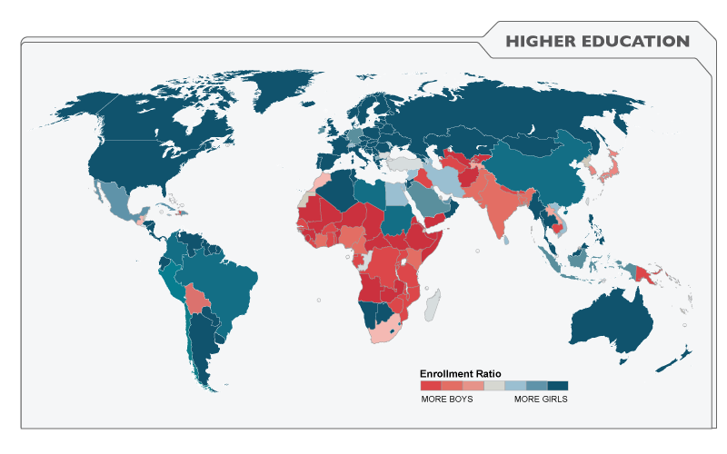

for Gender
Equality & Women Empowerment

Gender discrimination is exacerbated through laws in countries across the globe.
○ 113 countries do not have laws to ensure equal pay for equal work among men and women
○ 104 countries make certain jobs off-limits for women.
○ 39 countries have laws that mean a daughter cannot inherit the same proportion of assets as a son.
○ 36 countries limit what wives can inherit from their husbands.
○ 29 countries restrict the hours women can work
○ 18 countries allow men to prohibit their wives from working
○ 17 countries limit when and how women can travel outside the home.
Click to learn something new.
Then go share it!
Gender inequality is a major cause and effect of hunger and poverty: it is estimated that 60 percent of chronically hungry people are women and girls.
Facts from Clinton Foundation